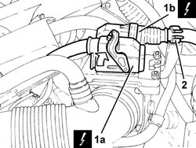
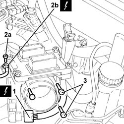
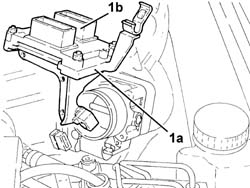
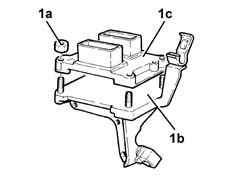
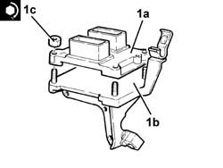
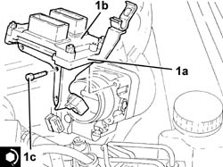

1056B87 IGNITION/INJECTION SYSTEM CONTROL UNIT MOUNT - R R
- Path
- Procedures > 10 ENGINE UNIT > 1056 PETROL INJECTION SYSTEM > 1056B MULTI-POINT INJECTION SYSTEM (MPI) > 1056B87 IGNITION/INJECTION SYSTEM CONTROL UNIT MOUNT - R R
- Kind
- repair procedure (removal / refitting; the operation number is the code)
- Applies to
- engines: 1.8 T.SPARK; all production periods
- Interactive page
- https://sloeber94.github.io/elrnDB-aGt/en/#/125002613
Applies to: engines: 1.8 T.SPARK; all production periods
 Removing
Removing
 Refitting
RefittingMake sure that the ignition key is in the OFF position, then disconnect the battery terminal (-).
Description | Connector | |
|---|---|---|
- | Battery | A1B |
1. Disconnect the electrical connections (1a) and (1b) from the injection/ignition control unit.
Description | Connector | |
|---|---|---|
1a | Engine management control unit | M10A |
Description | Connector | |
|---|---|---|
1b | Engine management control unit | M10B |
2. Release the electrical wiring from the fastening on the injection/ignition system control unit mounting.

Applies to: engines: 1.8 T.SPARK; all production periods
Proceed with the removal
Op. 1048A34 SLEEVE(S) FROM FLOW METER TO AIR SUPPLY CAPACITY CASE - R + R.
1. Disconnect the electrical connection from the throttle casing integrated with D.V.L. and release the wiring from the band on the mounting.
Description | Connector | |
|---|---|---|
1 | Throttle body actuator | N75 |
2. Undo the bolt (2a) and disconnect the earth lead (2b) from the injection/ignition control unit mounting.
Description | Connector | |
|---|---|---|
2b | Earth on engine | C40C |
3. Undo the bolts fixing the injection/ignition system control unit mounting.

Applies to: engines: 1.8 T.SPARK; all production periods
1. Remove the injection/ignition system control unit mounting (1a) complete with control unit (1b).

Applies to: engines: 1.8 T.SPARK; all production periods
1. At the bench, undo the nuts (1a) and separate the injection/ignition system control unit mounting (1b) from the control unit (1c).

Applies to: engines: 1.8 T.SPARK; all production periods
Refitting
Removing1. At the bench, assemble the control unit (1a) on the injection/ignition system control unit mounting (1b) and fasten it tightening the nuts (1c) to the recommended torque.
Fastening | Component | Ø | Value (daNm) | |
|---|---|---|---|---|
1c | Nut | INJECTION/IGNITION SYSTEM E.C.U. | M6 | (Mount side) 0.8 - 1.1 |

Applies to: engines: 1.8 T.SPARK; all production periods
1. Refit the injection/ignition system control unit mounting (1) complete with control unit (1b) back in its housing and secure it tightening the bolts (1c) to the recommended torque.
Fastening | Component | Ø | Value (daNm) | |
|---|---|---|---|---|
1c | Bolt | BUTTERFLY VALVE CASE/S (MPI) | M6 | (Air chamber side) 0.8 - 1.1 |

Applies to: engines: 1.8 T.SPARK; all production periods
Connect the earth lead to the injection/ignition control unit mounting and secure it using the bolt.
Connect the electrical connection to the throttle casing integrated with D.V.L. and fasten the wiring to the band on the mounting.
Proceed with the refitting
Op. 1048A34 SLEEVE(S) FROM FLOW METER TO AIR SUPPLY CAPACITY CASE - R + R.
Connect the electrical connections to the injection/ignition control unit and fasten the electrical wiring to the injection/ignition system control unit mounting.
Connect the negative battery terminal (-).